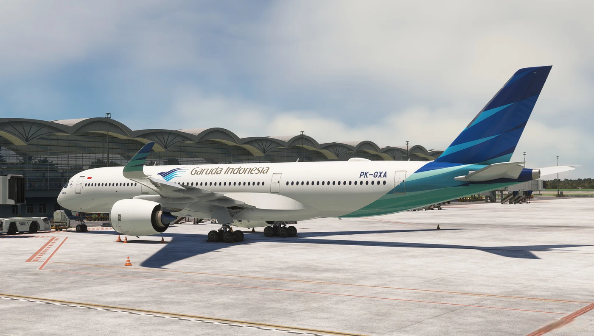
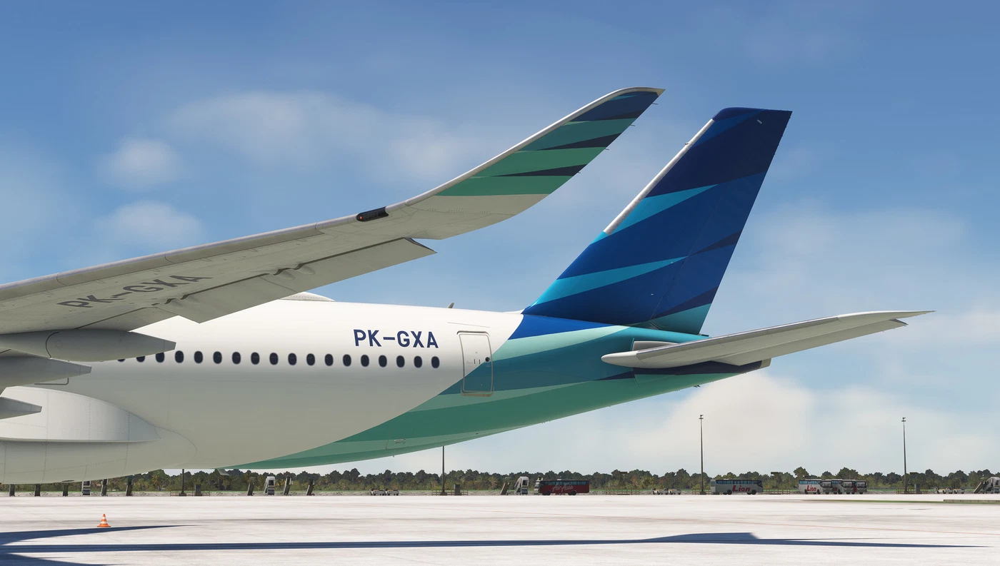
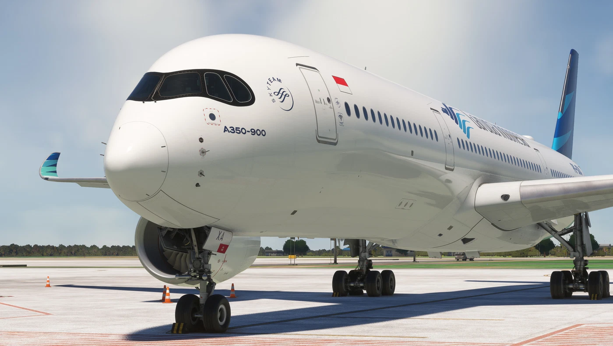

Welcome onboard
As we just continue using B777-300ER, A330-300, A330-200 and A330-900 in our fleet for long-range flight, shortly in 17 August 2025,
We Garuda Indonesia will using A350-900 and A350-1000 with a special livery with HoYoVerse and Project Sekai that we hoping can make a interst to you and other people.
We proudly introduce to you.
The A350-900



And this is that the longest plane that we had, ever in our fleet
The A350-1000

Please note that A350-1000 ilustration are from AI generate, not from any game because theres no developer making A350-1000 Garuda Indonesia Livery right now (5/23/2025)